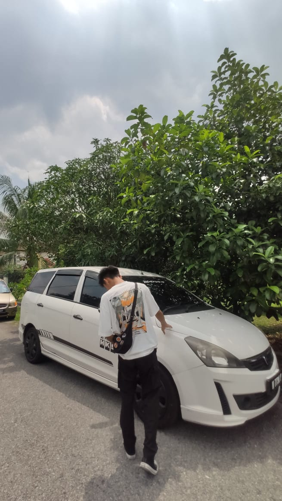

I start my journey since form 6 . Form 6 really change my life . I take Science social (bahasa melayu,sejarah,pengajian am,muet, and also perniagaan) . I achieve 2.28 cgpa at the end of form 6 . It not that great but enough to proceed study .
I take Unimap as my degree platform . I love Unimap because they have my favourite course (Media interactive) . I will do my best here and make family proud !